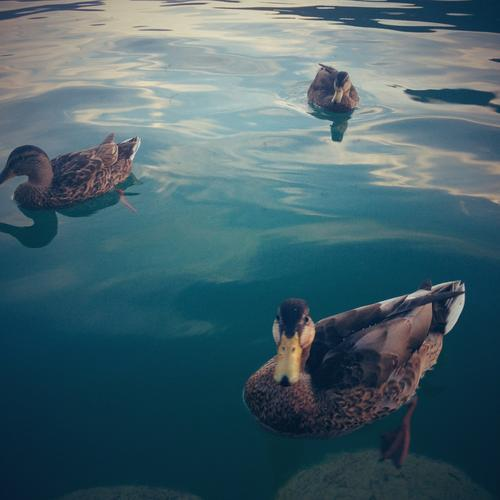

Sun, 19 Aug 2012 14:39:00 · designers · creative · talentsforhire
I don't fuckin' work for free.
So far I’ve resisted the urge to join the bandwagon of pissed designers who repeatedly asked to work for free in exchange for bullshit like ‘exposure, we-have-no-budget crap, or here’s the best, we are a small startup with no budget for design’. The harebrained excuses goes on. Recent heated discussion prompt me to state my stand on this topic. And I’m going to say this once and for all… “If you don’t have a dime to pay for the time I’ve spent labouring on your oh so 'important’ project then fuck you, and go find some other blubbering idiots who believes in the bullshit you feed them."
I’m not sure which one amaze me more, the audacity of those cheap clients or the fact that they don’t even think that design is something worth paying for. And I’m referring to any creative service regardless of media. I mean, you won’t just go offer a plumber to work for free in exchange for exposure for his talent, would you? Not to be disrespectful of the profession, but if you are willing to pay for such manual labour then why don’t you pay for work that obviously require not only more brain muscles but also talents*? – (*Okay, I’m not disregarding the fact that there are many out there with crappy and mediocre skills who shamelessly claim the title as designer this or creative director that… but I’m not talking about them).
To date I was able to politely declined such request, save for those coming from families. By family here I mean like your mom or your aunty, not brother or sister from another mother. I’ve heard them all and they’re simply a reek excuse for not paying you. And if I didn’t fall for it, then neither should you.
The worst of it all are arts or culture organizations. I’ve had it with them. I heard it all. And here’s the best part, most of them always come with contradictory pitch. Bribing us with exposure because they have global network but yet have ZERO budget for creative publicity work? Fuck you! I mean, seriously people. YOU ARE working in the same discipline that promotes arts, yet you shamelessly ask designers to work for free for your campaign? Oh but you are a clever one, are you? Instead of asking us outright you disguise the request as 'Competition’ on who can create the best prints, or other collateral materials, website, etc., and winner will get their name exposed in the publication. But it didn’t stop there. You’d think that once you 'win’ the competition they’d just take your works as is. Oh no, they would come and ask you for some iterations. Like loads of them. It drives me nuts. Yea, I’ve been there done that. I was once a fool too. An idiot who naively believe that maybe, just maybe I could ride their tide and piggyback their network to taste what 'global exposure’ like. Was is it as good as they promised? Bloody unlikely. I’ve got my own exposure through sheer honest work that actually pays. My paying clients are my network. My exposure. You don’t need air promises to get your work recognized. They’re bollocks and you know it.

(I highly doubt these ducks would take any bullshit. And neither should you).
I’ve had more request that even more insulting… You know in one of those dull party where everyone is an artist, or at least claim to be. Then some of them would strike up a conversation that eventually led to what you do etc. When I replied that I’m a designer they immediately jump into conclusion that I am either a graphic or web designer; to which I usually answered coldly that I’m neither*. "Not that kind of designer, I do video games design.” Usually this gave them a pause and an excuse for me to walk away. Alas, some people just too thick in the skull to read a hint and keep badgering me… “Oh, I’ve been dying to make a game. I’ve had this idea for a game about….” – Bloody hell, if I said no to work for free as print/web designer what made them think that I even remotely interested to do video games for random idiots like them?
The total lack of understanding on what goes behind every creative process results in complete disregard for people who creates content, and almost invariably, nothing is allocated in the budget for said content.
And the no-paying clients are usually the worst lot. I’m not sure where they found the nerve to even think that such and such requests are within the realm of acceptable iteration process, especially when they didn’t spend a penny for it. You’d think they’d nicely accept whatever deliverables they’ll get considering it was for free. Pfff…
So this is me calling all creative talents to stand united and say,“Fuck you to the idiots who thinks can get away for not paying for our talent and service." There’s no holy grail nor a 'quick-get-famous’ scheme when it comes to being recognized as creative talents. Simply do your best and the rest will follow. It pains me to see every time I heard there’s another sucker fell into this classic scheme of work for free. The demand would (hopefully) eventually cease once there’s no supply of creatives who’d work for nothing. But as long as there are some suckers out there who gladly work for free then this is going to be like the IE6 conundrum. Microsoft will never pull the plug for IE6 as long as developers still testing their product on it. And I suspect there’s none smart enough who still use IE6 except for those testing on it.
–
*I was trained as graphic designer, and for a while enjoying the fun working as designer in various media from print, web and space/interior design. But that was before I decided to return to my original passion in creating video games.
**Please excuse all profanity. I won’t expect my mom to read this post so I was hoping to be able to get away with it… ^_^